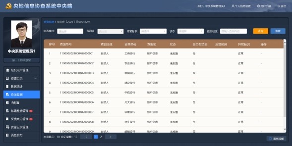

1 系统功能角色清单
表1.1 系统角色功能清单
2 系统流程
本系统以支持各省纪委监委的查询员从提出查询申请到查看反馈结果为目标而建立，包括审批表的填写、审批、盖章、审核、核验、查询、反馈结果等环节。具体流程如下：
1.央地信息协查地方端查询员在系统中填写审批表；
2.将审批表提交至具有审批权限的领导处进行审批，系统依据地方权限进行配置，支持线上审批或者线下审批；
3.领导审批通过后，查询员将审批表提交至公章管理员处审核；
4.公章管理员进行形式审核并加盖公章；
5.盖章通过后，将加盖公章的审批表提交至审核员处进行形式审核；
6.审核员形式审核通过后，将审批表提交至央地信息协查中央端，系统对审批表进行自动核验；
7.系统自动核验通过后，由系统管理员负责将审批表手动摆渡至查询系统进行查询；
8.各协查单位接收到查询请求后，将查询结果经过查询系统反馈至信息协查系统中；
9.查询员登录系统查看审批表的反馈结果。
图2.1 系统流程图
3 登录系统
用户第一次登录时，用户名和密码为系统管理员默认分配的初始化用户名和密码。
初次进入系统后，为了系统数据安全，需要马上修改密码。
建议使用奇安信浏览器或IE10、11及以上版本浏览器。
图3.1 登录界面
4 操作行为记录
查询管理员可以查看本单位所有人操作系统的记录。用户是谁，所属那一单位和部门，在什么时间操作的系统，操作的内容是什么，在哪个IP操作了系统。
用户为系统的登录人；时间为用户操作功能的时间，精确到年月日时分秒；操作为用户具体的操作行为；IP为用户登录操作系统的IP地址。
图4.1 操作行为记录
5 查询统计
查询管理员对全国各省纪委监委查询申请审批表的使用情况进行相关的统计分析工作，包括基本信息表和明细表。
基本信息表统计一段时间内，各申请单位申请了多少张审批表；自然人、机构、其他（车牌号、银行账/卡号、手机号、信托产品编码、理财产品编码、保险保单号、商户代码、商户订单号、签购单信息）每一类被查询对象分别查询了多少个。明细表统计一段时间内，各申请单位每一类信息查询类型分别查了多少条。
点击“导出报表”可以将按照单位及时间筛选后的统计报表以Excel格式导出到本地。
图5.1 查询统计—基本信息表
图5.2 查询统计—明细表
6 查询监测
查询管理员、系统管理员可以对全国信息协查的查询申请处理状态和反馈进度进行全面监测，当传输存在异常时，可及时获悉。
在页面左侧展示全国各省的纪检监察单位的导航树，以省为最高级节点，选择某省，右侧展示该省所有单位的监测信息。
查询管理员可以在该模块了解全国各省纪委监委查询申请审批单的处理状态和外部协查的反馈进度，并可点击查询号，查看该查询申请的具体查询信息项和反馈状态。
系统管理员可以在该模块了解外部查询系统发送给各个协查单位的请求数量，该数量是指拆分成最小单位的查询请求；知晓反馈数、未反馈数、异常数量，以及反馈进度。同时，对于未反馈结果给地方的，可以重新发送反馈结果。
图6.1 查询监测——点击查询号
7 导出查询申请
地方端请求查询的审批表，经中央端系统自动核验无误后，需要人工导出查询请求，再传至信息查询系统进行查询。
可按照申请单位和申请时间来筛选查询申请文件，可多选批量导出，也可以单个导出、全部导出。
图7.1 导出查询申请
8 资源目录
查询管理员、系统管理员可以查看系统已接入的协查单位与数据项。
协查单位内容包括单位名称、数据类型、被查询对象类型与查询数据反馈时长（参考）。
数据项左侧为信息类型的导航树，可定位到某协查单位具体的信息项，并查看该信息项下的具体字段与说明。
9 查询员清单
查询管理员可以查看全国各省纪委监委单位的查询员信息，包括查询员姓名、所属单位、所属部门、工作证有效期、账号有效期，并可以查看工作证。
通过选择申请单位、申请部门，或者输入信息检索条件，可以实现查询员的筛选。
10 组织用户管理
系统管理员负责系统的组织用户管理、查询项管理、IP配置管理、工作证审核等相关工作。
10.1 组织机构同步
系统中的所有组织机构和用户，除专案组外，全部从应用支撑平台或专门的用户组织机构管理平台同步过来。初次使用系统时，应将组织机构和用户初始化。
图10.1 组织用户管理
10.2 查看用户信息
选择某地方纪委监委，右侧详情页面则展示该地方纪委监委的全部用户信息。点击操作列“查看”，可以查看某个用户的详细信息。
10.3 导出组织机构
点击“导出组织机构”或“导出全部”时，系统会将从各省纪委监委同步过来的组织机构用户信息以zip文件的形式自动导出，再将该文件导入到信息查询系统进行解析。“导出组织机构”为增量导出，“导出全部”为全量导出。
11 数据统计
系统管理员对全国各省纪委监委查询申请审批表的使用情况可以进行相关的统计分析工作，就统计结果支持导出报表。
每个省纪委监委在一段时间内，申请了多少张审批表，查询主体数量、全部反馈数量、部分反馈数量以及未反馈数量是多少，同时未反馈数支持下钻，查看具体是哪些请求未反馈。
点击“导出报表”可以将统计报表以Excel格式导出到本地。
图11.1 数据统计
12 IP配置管理
为保证系统使用安全，采用IP限制访问策略，只有配置了IP的客户端才可以访问本系统。IP由系统管理员统一配置。
图12.1 新建IP分配策略
12.1 新建IP分配策略
策略名称为必填项；
IP配置最多只能添加5个IP段和10个IP，且不能重复，即本策略中的IP互相冲突，或与其他策略中的IP出现冲突时，会给出提示，不能添加；
有效期即该策略中的IP有效期，所有的IP仅能在该期间内访问系统，超期的IP则失效不能访问系统。
批准依据部门线下提交的申请IP依据，系统管理员以图片的形式上传到系统。
已经配置好的IP分配策略可以重新编辑，超过有效期的IP不可以访问系统。
13 基础数据管理
基础数据包含文书模板、印模、证书三类数据，是与各银行等协查单位进行查询请求的必要前置条件。
系统管理员将每省最新上传且生效的基础数据信息导出并使用。可选择省份批量导出，也可以单个导出。导出的文件为zip格式。
14 反馈意见管理
中央系统管理员负责对全国各省纪委监委查询员提出的反馈意见进行反馈。对未答复的反馈意见可以进行答复，对已答复的反馈意见可以查看详情。
图14.1 意见答复
15 资源目录管理
中央系统管理员负责对全国各省纪委监委查询员提出的反馈意见进行反馈。对未答复的反馈意见可以进行答复，对已答复的反馈意见可以查看详情。
资源目录可按照“全部同步”和“按省份同步”两种方式进行同步。点击“全部同步”将现有的资源目录全部同步给使用央地信息协查系统的各省纪委监委；点击“按省份同步”可以按照省份将资源目录发送给指定的某省级纪委监委。
通过点击左侧导航树不同级别，可分别添加、编辑和删除行业、协查单位、查询项、表、字段。
图15.1 资源目录管理
16 消息发布
中央系统管理员可向各省纪委监委用户发布消息通知。发布消息时，需要选择消息发布对象所属单位和角色。单位选择为空时，消息将发送至所有单位。系统管理员需填写消息通知标题与消息内容，消息通知标题限50字以内，消息内容不限字数。
图16.1 消息发布